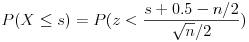

Statistics > Nonparametrics > 1-Sample Sign Test
This utility performs calculations for testing claims about a population
median for the case when the type of
population distribution cannot be assumed.
The null hypothesis H0 of a claim is median = median0,
where median0 is the hypothesized median.
The alternative
hypothesis H1
can be one of the following: median < median0,
median > median0, or median ≠ median0.
A sample value above median0 is assigned a positive (+) sign.
A sample value below median0 is assigned a negative (-) sign.
The test statistic is computed as follows:
- Left-tailed (H1: median < median0):
s = the number of positive (+) signs
- Right-tailed (H1: median > median0):
s = the number of negative (-) signs
- Two-tailed (H1: median ≠ median0):
s = the minimum of the number of (+) signs and the number of
(-) signs
The p-value for a one-tailed test (left-tailed or right-tailed) is
P(X ≤ s) where X is a random variable representing the number
of positive signs. The p-value for a two-tailed test is
2P(X ≤ s).
If the sample size n (excluding values that are equal to the hypothesized
mean) is not more than 50, exact binomial probability calculations
are used to compute the p-value. If the sample size is greater than
50, the normal distribution is used as an approximation to binomial:

To use the utility, follow these steps:
- If individual samples are entered in a single column of the
Datasheet, select the Samples in column: radio button, and
select the column name in the drop-down menu.
- To use summary statistics of the sample data, select the
Summarized sample data: radio button, and input the number
of positive signs and the number of negative signs in the provided text fields.
- Select the form of the alternative hypothesis in the
Alternative Hypothesis: drop-down menu. Enter the
hypothesized population median in the provided text box.
- Click the OK button to perform the computation. The
results will be displayed in the log window.